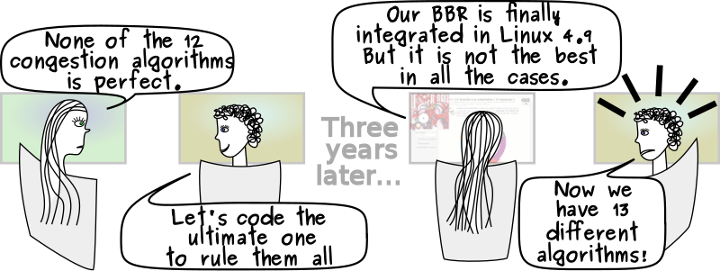

What is an algorithm?
Computer algorithms are, at their core, a sequence of computal instructions, which results in either solving a problem or performing a function. Instructions are
clear and comprehensive, and they use a language to communicate the instructions.
All computer programs fall under the umbrella of algorithms, whether the program uses numbers, characters, etc. Furthermore, there can be many different algorithms which perform the same task. Also, algorithms are not always computer related or overly complicated, as the basic definition is that it is a finite list of instructions to complete a task.
Brief History
The use of algorithms predates computer technology. Mathemticians from ancient civilizations (Babylonian, Egyptian, Greek) when solving mathematical problems. The discovery of prime numbers, code breaking, and more leveraged algorithms and algorithmic thinking. The word algorithm comes from derived from 9th-century mathematician Muḥammad ibn Mūsā al-Khwārizmī. The definition of the algorithm has become more evolved and formal over time, becoming more associated with technology.
